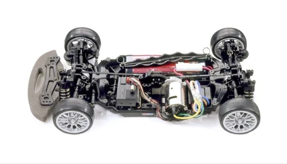

タミヤ TA-05

引用元画像：タミヤ公式サイト
📋 基本情報
| メーカー | タミヤ（Tamiya） |
|---|---|
| 機種名 | TA-05 |
| 型番 | 58380（TA05 MS シャーシキット）など |
| 発売時期 | 2005年4月 |
| 生産状況 | 生産終了 |
| カテゴリー | ラジコンカー（1/10スケール 電動RCカー） |
| サブカテゴリー | ベルトドライブ4WDツーリングカー |
📏 シャーシスペック
| 全長 | 約390mm |
|---|---|
| 全幅 | 約185mm |
| ホイールベース | 257mm / 260mm（調整可能） |
| トレッド | 前後とも調整可能 |
| タイヤ径 | 26mm径オンロードタイヤ |
| フレーム | モノコックタイプ（FRP製メインフレーム） |
⚙️ 駆動系
| 駆動方式 | フロント・リヤともベルトドライブ4WD |
|---|---|
| デフギヤ | 前後ともボールデフ |
| ギヤ比 | 調整可能（プーリー・ベルト交換により） |
| モーター | 540タイプ |
| ベアリング | フルベアリング仕様 |
🔧 サスペンション
| 形式 | 4輪ダブルウィッシュボーン独立懸架 |
|---|---|
| ダンパー | CVAオイルダンパー |
| ステアリング | 3分割タイロッド式 |
| 調整機能 | キャンバー角、トー角、車高など細かな調整が可能 |
💡 特徴
ベルトドライブの高効率伝達
- 前後ともベルトドライブ方式採用
- シャフトドライブに比べて伝達ロスが少ない
- スムーズな加速とコーナリング性能
FRPモノコックフレーム
- 軽量かつ高剛性なFRP製メインフレーム
- 低重心設計でコーナリング性能向上
- バッテリー位置を最適化
高いセッティング自由度
- ホイールベース調整可能（257mm / 260mm）
- トレッド調整可能
- キャンバー角・トー角・車高の細かな調整
- プーリー・ベルト交換によるギヤ比変更
バリエーション展開
- TA-05: 基本モデル
- TA-05 MS: ミドルシャーシ仕様
- TA-05 VDF: VDF（Variable Damper Force）搭載
- TA-05 IFS: IFS（インボードフロントサスペンション）採用
🔧 ぽすとそに工房での修理実績
修理難易度
★☆☆☆☆（個人的には最も慣れ親しんだシャーシ）
※一般的な難易度は★★☆☆☆（ベルトドライブのため初心者はやや難しい）
※ぽすとそに工房では、このシャーシが初めてのサーキット走行だったため、特別な思い入れがあります。
💚 ぽすとそにの思い出
このTA-05は、私が初めてサーキットで走り込んだシャーシです。
ベルトドライブの調整に苦労しながらも、セッティングを詰めていく楽しさを教えてくれた1台。
今でもこのシャーシの修理依頼があると、当時の走行を思い出します。
よくある故障・注意点
- ベルトの張り調整が繊細（緩すぎ・きつすぎはNG）
- ボールデフのメンテナンスが定期的に必要
- FRPフレームのクラックに注意（転倒時）
- CVAダンパーのオイル漏れ（Oリング劣化）
修理のポイント
- ベルトの張り調整は経験が必要（適度な張りが重要）
- ボールデフの締め付けトルク管理が重要
- FRPフレームのクラックは早期発見・早期対応
- ダンパーのOリングは定期的にグリスアップ
- ベアリングの定期的なメンテナンスで性能維持
その他の特徴
- 2005年発売のため補修部品の入手が難しい場合あり
- ベルトドライブ特有の滑らかな走りが魅力
- TA-06、TA-07、TA-08と後継機種が続いている
- 中古市場でも比較的入手しやすい